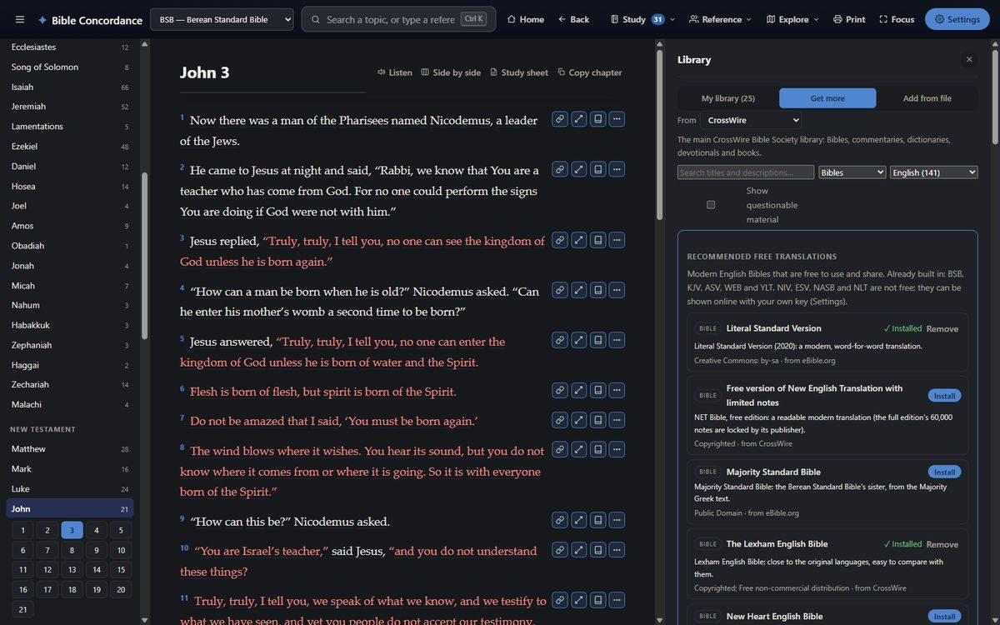
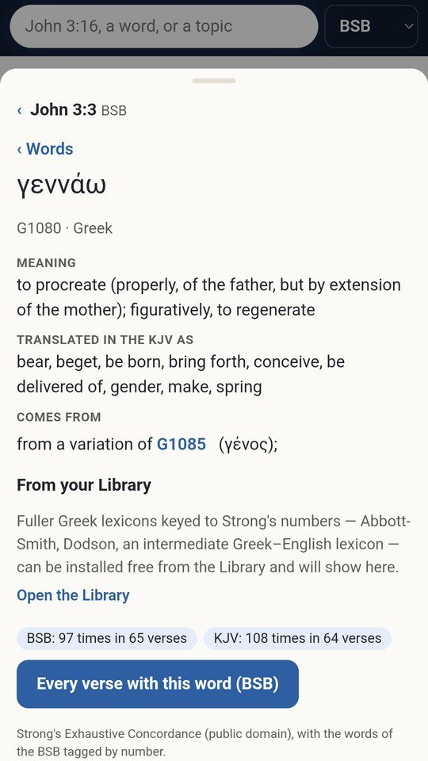

Looking for an e-Sword alternative?
Bible Concordance is a free Bible study app for Windows and Android that opens the e-Sword files you already have. It is an independent app and is not connected with e-Sword.
Bring your files with you
If you have been collecting modules, you do not have to start again. The app opens Bibles (.bblx), commentaries (.cmtx), dictionaries and lexicons (.dctx, .lexx), devotionals (.devx), and topic and reference modules (.topx, .refx). It also opens MySword and MyBible modules and SWORD modules from CrossWire, and EPUB and PDF books on Windows.
Only add files you have the right to use. Modules that were bought and are locked by their publisher cannot be opened, here or anywhere else.
What you get
- Free, with no account, no adverts, and no unlock for extra features. It works offline.
- Windows and Android, kept in step over your home Wi-Fi, with a backup file when you want one.
- Strong's numbers and the Hebrew and Greek: tap a word, see its meanings and every verse that uses it. Interlinear and a concordance on Windows.
- Commentaries and a library to download, free, from CrossWire's libraries.
- A sermon builder, slides and a Sunday service planner on Windows.
- Five Bibles built in (BSB, KJV, ASV, WEB, YLT) and more than a thousand to download.


What it does not do
It runs on Windows and Android only: there is no Mac or iPhone version. Each program has its own strengths, so look at the other one's website for what it offers today and try both. Bible Concordance costs nothing to try.
Questions
Will my e-Sword Bibles and commentaries open?
Do I need an account?
Is it really free?
Can I use it on my phone as well?
Try it, it is free
No account, no adverts, and it works without the internet.
Download for Windows or Android